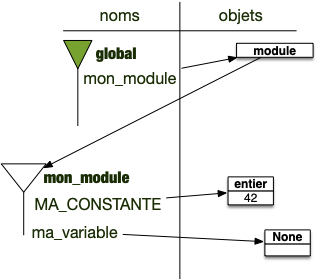

Modules python
Les modules python sont des fichiers (on l'a vu) ou des dossiers (on le verra) que l'on peut importer dans un fichier en cours d'exécution. Il y a essentiellement 2 manières d'importer un module en python soit directement :
import math
L'importation du module crée, comme on l'a vu, des espaces de noms utilisables dans le programme qui importe :
import math
print(math.pi)
Soit en important un nom du module dans l'espace de nom global :
from math import pi
Le nom pi de l'espace de nom du module math est importé dans l'espace de nom global :
from math import pi
print(pi)
Enfin on peut importer tout un espace de nom dans l'espace de nom global :
from math import *
Cette pratique est fortement déconseillée car on ne sait pas ce qu'on importe :
from math import *
print(pi)
Mécanisme d'importation de modules
Importer un module revient à exécuter un fichier python et à renommer son espace de nom global dans le nom du fichier. Par exemple supposons que l'on ait dans le même dossier les fichier mon_module.py et programme_principal.py tels que :
-
mon_module.pyvale :MA_CONSTANTE = 42 va_variable = None -
programme_principal.pyvale :import mon_module print(mon_module.MA_CONSTANTE)
À la fin de l'exécution de la ligne 1 du fichier programme_principal.py, on a les différents espaces de noms suivant :

Le nom mon_module correspond à un objet de type module, contenant un espace de nom. On peut accéder aux noms de son espace avec la notation pointée :
mon_module.MA_CONSTANTE
On cherche le nom MA_CONSTANTE dans l'espace de nom associé à l'objet de nom mon_module.
Faite l'exercice ci-dessous pour vous convaincre que l'import exécute bien le fichier importé :
Créez les deux fichiers mon_module.py et programme_principal.py et copiez/collez y leurs codes.
- exécutez le fichier
programme_principal.pypour voir s'afficher42 - Ajouter dans le fichier
mon_module.pyune ligne avec l'instructionprint("coucou de l'import")puis exécutez le fichierprogramme_principal.py.
Vous devriez voir s'afficher "coucou de l'import" à l'écran, ce qui prouve que chaque ligne du fichier mon_module.py est exécuté à l'import.
Exécution du fichier module
python -m pip https://docs.python.org/fr/3/using/cmdline.html
python -m random alors que rien n'est affiché à l'import
différence entre exécution et import -> cout du if name == main
Modules python et packages
on a vu avec un fichier et l'espace de nom associé
parfois nested. Travailler avec des dossiers et__init__.py
tout un tas lui même (math, pathlib, etc) et on peut en installer d'autre avec pip.
aller sur le site de pip pour voir tous les modules installés
On peut facilement ajouter des modules à pip.
Installation et usage
dépendant de l'interpréteur python
c'est pourquoi on les installe via celui ci et pas directement avec pip qui peut être lié à un tout autre interpréteur.
Où sont les modules ?
Les dossiers où python va cherchez les modules sont listés dans la variable sys.path.
vous pouvez le voir en exécutant le code :
import sys
for dossier in sys.path:
print(dossier)
Chez moi, sur un mac où python est installé avec brew ce programme rend :
/opt/homebrew/Cellar/python@3.11/3.11.5/Frameworks/Python.framework/Versions/3.11/lib/python311.zip
/opt/homebrew/Cellar/python@3.11/3.11.5/Frameworks/Python.framework/Versions/3.11/lib/python3.11
/opt/homebrew/Cellar/python@3.11/3.11.5/Frameworks/Python.framework/Versions/3.11/lib/python3.11/lib-dynload
/Users/fbrucker/Library/Python/3.11/lib/python/site-packages
/opt/homebrew/lib/python3.11/site-packages
/opt/homebrew/lib/python3.11/site-packages/gpg-1.22.0-py3.11-macosx-13-arm64.egg
/opt/homebrew/opt/python-tk@3.11/libexec
Il y a plusieurs dossiers :
/opt/homebrew/Cellar/python@3.11/3.11.5/Frameworks/Python.framework/Versions/3.11/lib/python3.11contient les packages de bibliothèque standard (il contient par exemple un fichier "random.py" qui contient le code du packagerandom)/opt/homebrew/Cellar/python@3.11/3.11.5/Frameworks/Python.framework/Versions/3.11/lib/python3.11/lib-dynloadcontient les packages python qui ne sont pas écrit en python mais en C/opt/homebrew/lib/python3.11/site-packagesqui contient les packages qui seront installés par pip.
La gestion des packages peut être compliquée. Normalement, si vous vous y prenez comme indiqué ici et en utilisant votre ordinateur personnel, tout devrait bien se passer. Si cela commence à ne plus aller, vous pouvez essayer d'installer les packages à un autre en endroit en suivant ce tuto, ou, comme on le fera plus tard en utilisant un environnement virtuel. Mais, dans le doute, consultez un prof qui s'y connaît.